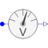
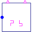

PotentialSensorPolyphase potential sensor |

|
Diagram
{kind=link}
Information
This information is part of the Modelica Standard Library maintained by the Modelica Association.
Contains m potential sensors (Modelica.Electrical.Analog.Sensors.PotentialSensor), thus measuring the m potentials phi[m] of the m pins of plug_p.
Parameters (1)
| m |
Value: 3 Type: Integer Description: Number of phases |
|---|
Connectors (2)
| plug_p |
Type: PositivePlug |
|
|---|---|---|
| phi |
Type: RealOutput[m] Description: Absolute voltage potential as output signal |
Components (1)
| potentialSensor |
Type: PotentialSensor[m] |
|---|
Used in Examples (3)
|
Modelica.Electrical.Machines.Examples.SynchronousMachines SMPM at no-load |
|
|
Modelica.Electrical.PowerConverters.Examples.DCAC.PolyphaseTwoLevel Test of pulse width modulation methods |
|
|
Modelica.Magnetic.QuasiStatic.FundamentalWave.Examples.BasicMachines.SynchronousMachines Test example: PermanentMagnetSynchronousMachine with inverter |
Used in Components (1)
|  |
Modelica.Electrical.PowerConverters.ACDC.Control Control of 2*m pulse center tap rectifier |